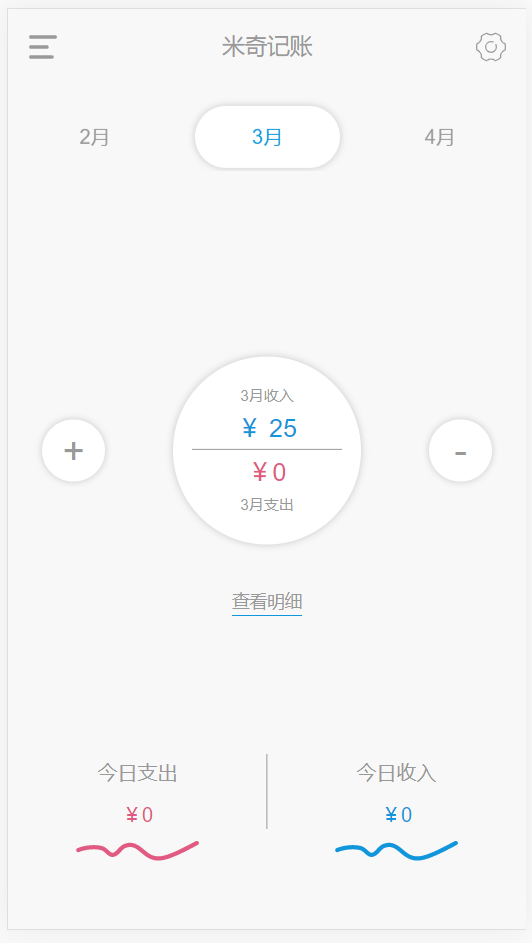
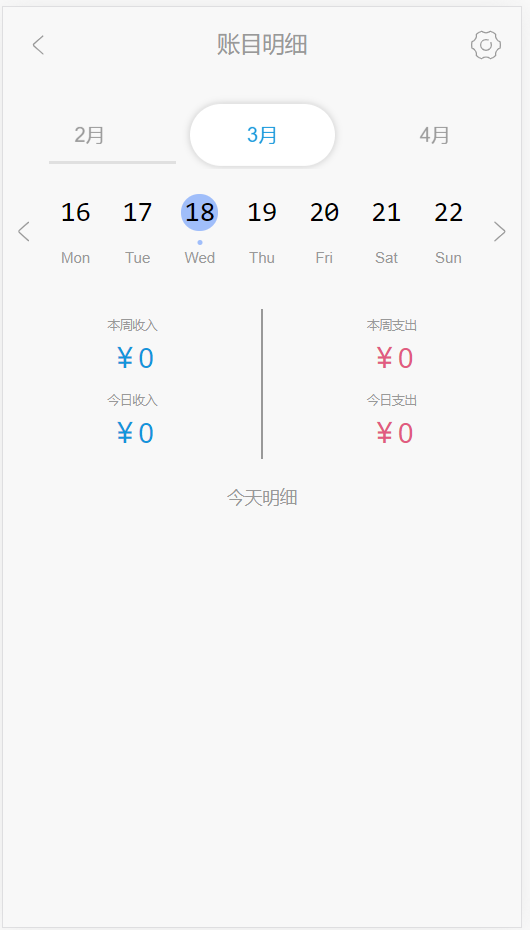
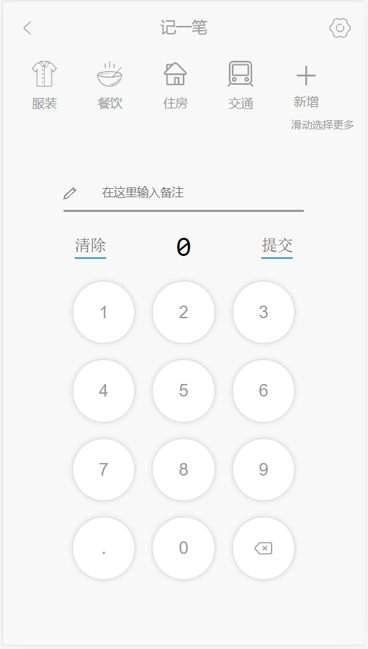
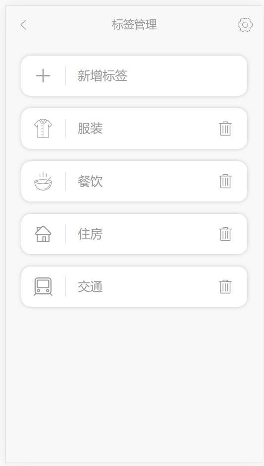

李彦辉
13662463430 | 943514589@qq.com
微信：KCVO1995 | 25岁 | 广州
求职意向：前端工程师 | 本科
技能
- 熟悉使用 HTML5 标签，能够编写具有 语义化 的页面
- 熟悉页面制作技巧，具有 像素级 还原设计稿能力，具有 平均水准之上 的审美，最求设计的优雅
- 熟悉掌握原生 JavaScript，ES6+ 语法，掌握重要概念如：原型链、闭包、作用域链、面向对象、this、Ajax、JSONP、跨域、Promise
- 熟悉 Vue 框架的使用，理解重要概念如：生命周期、响应式原理、计算属性、监听器、插槽 等，以及 Vue 全家桶 的使用，包括 Vue Cli、VueRouter、Vuex 等
- 了解 TypeScript 的使用，我的项目就是 TS 实现的
- 了解 Webpack 的配置和优化
- 有 node.js 的使用经验
- 掌握 Git/GitHub 工作处理流程
- 善于面向 Google 及 StackOverflow 编程，拥有总结书写技术博客的习惯(点击进入)
项目经历
-
Clock UI
一款基于 Vue 的 UI 框架
参考了 UI、 Ant Design、Bootstrap 等优秀 UI 框架, 从用例分析开，提供了包括按钮、输入框、栅格布局、默认布局、弹出信息、分组标签、气泡卡片和折叠面板等多个常用组件，组件提供多种 自定义属性 , 比如自定义气泡卡片的触发方式、标签的排列方向、折叠面板的显示方向等，用户可以 按需引入。此外，本框架除了考虑了自身组件在PC 端和 移动端的样式逻辑之外，还提供了 响应式的网格系统。
本项目，使用 Sass 编写默认样式，引入 Mocha、Chai、Sino、Vue Test Utils 编写单元测试, Travis CI 进行持续集成，最后使用 npm 发布组件，vuepress 编写官网。
-
米奇记账
   一个基于 Vue / TypeScript 的移动端单页面应用
简约的 UI 设计，支持账目增删改查，标签管理及新建，数据直观显示，支持按月、按周、按天展示。
项目使用 Vue Cli 搭建，通过 Vue Router 来进行页面的跳转，并带有生动的过渡效果，使用 Vuex 储存数据，使用 Day.js 处理时间和日期，并使用 TypeScript 语言写法。
-
王冠首页
这是一个基于 jQuery 单页面应用
一个简洁易用的前航页面，可选多个搜索引擎，支持 Tab 一键切换，支持收藏页面的新建和删除，支持响应式布局，移动端和pc 端都可使用。
使用 jQuery 进行 DOM 的操作，使用 正则表达式 格式化网站地址，引入多个 SVG 图标进行润色。
开源项目
-
自己写的 DOM 库
源码链接实现了元素选择、元素创建、事件委托 等常见功能。
-
灵魂画板
预览地址 源码链接我在学习 Canvas 时做的一个小作品，灵魂画家专属，哈哈。
-
CSS 画一个米奇老鼠
预览地址 源码链接这是我在学习 CSS3和动画 时制作的一个可爱作品，会动的代码，一步一步画出米奇。
-
Clock-demo
预览地址 源码链接通过 原生JavaScript和CSS 制作的一个可爱的时钟，可以切换时区。

其他链接
教育及工作经历
-
广东工业大学华立学院
材料成型及控制工程 - 本科
~ -
广州麦凯斯电子技术有限公司
结构工程师
~
-
广州昊志机电有限公司
机械设计工程师
~